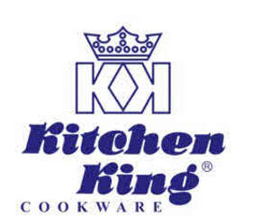

Trade Mark Journal No.2025/034 22 August 2025
UK00004207501 22 May 2025 (11,21)

- Class 11
- Apparatus for lighting, heating, steam generating, cooking, refrigerating, drying, ventilating, water supply and sanitary purposes; air conditioning apparatus; electric kettles; gas and electric cookers; vehicle lights and vehicle air conditioning units; Appliances for cooking foodstuffs; Broiling pans; Cookers incorporating grills; Cookers; Cooking appliances; Cooking grills; Cooking units; Domestic autoclave pressure cookers [electric]; Domestic frying pans [electric]; Electric cooking utensils; Kettles; Meat boilers; Pans (Electric cooking -); Electric frying pans; Frying pans (Electric -); Domestic frying pans [electric]; Frying machines; Broiling pans; Deep frying machines; Warming pans; Electric pans; Shower pans; Lavatory pans; Stew-pans (Electric -); Frying machines for food; Pans (Electric cooking -); Electric broiling pans; Chip pans (Electric -); Warming pans for beds; Warming pans, non-electric; Electric warming pans for beds; Dirt pans [parts of fires or furnaces]; Drain pans specially adapted for water heaters to protect from condensation, leaks, and overflow; Grills; Cooking grills; Grill lighters; Charcoal grills; Gas grills; Barbecue grills; Electric grills; Grills [cooking appliances]; Electric outdoor grills; Electric grilling apparatus; Cookers incorporating grills; Electric indoor grills; Grill heating plates; Grills for barbecuing; Grill lighters [apparatus]; Gas cooking apparatus incorporating cooking grills; Ventilation grilles being parts of extractor fans; Lava rocks for use in barbecue grills; Ceramic briquettes for use in barbecue grills; Barbecue grills (Lava rocks for use in -); Ceramic briquettes for use in barbecue grills [non-flammable]; Induction heaters; Induction furnaces; Induction ovens; Induction ranges; Induction cookers; Crucible induction furnaces; Induction heated casting furnaces; Induction units [heaters]; Induction water heaters; Electromagnetic induction cookers [for household purposes]; Electromagnetic induction cookers for industrial purposes.
- Class 21
- Cookware, tableware and containers; Steamers; Kitchen utensils; Cooking pots; Cooking pans; Woks.
KITCHEN KING INTL LIMITED
Representative: Charlotte Gillies